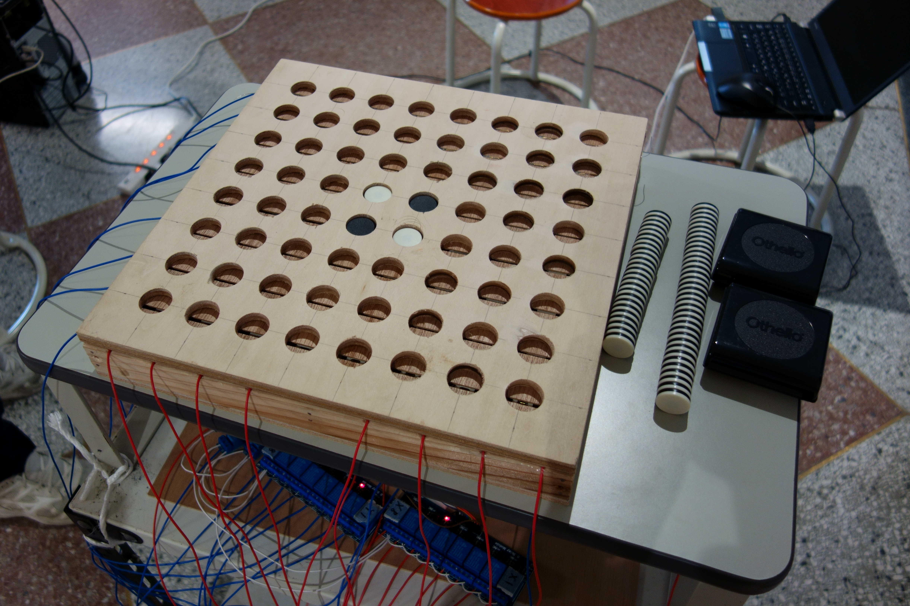
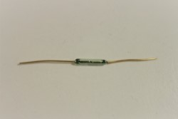
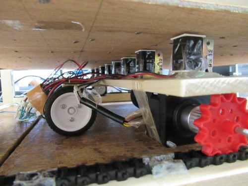
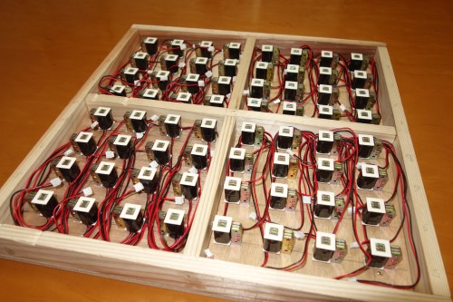

「常識なんて、ひっくリ返せ」

石を置くと、自動で挟んだ石をひっくり返してくれるという驚異の装置です。
実はこれで自動反転オセロは3台目で、2年半もの試行錯誤を重ねてきた力作です。
接触することなく石をひっくり返す動作を実現するのは磁力です。
写真のように石は白がN極、黒がS極の磁石になっていて、これが盤面の下に並べられた電磁石と反発することで石がひっくり返るのです。
電磁石を制御するのはArduinoです。
Arduinoとはパソコンを用いてプログラミングすることで電子部品を制御することのできるもので、電子工作の界隈などで広く利用されています。
(詳しい説明は検索すれば大量にでてくるのでそちらに譲ります…)
しかしながら、Arduinoで制御できる電圧は3.3V(今回使用する「ArduinoDue」の場合)でありさらに電流は0.8Aと低く、これでは電磁石を動かすだけのパワーがありません。
そこで使用しているのがリレーです。リレーとはいわば「電動式スイッチ」であり、Arduinoの少ない電流でも動作させることができます。このリレーを使用することで、電源装置から供給される電流を64個の電磁石のどこに流すかを制御することができるのです。
石の有無を検知するために使用するのがリードマグネットスイッチです。

これに磁石を近づけると電気が流れるようになるスイッチで、Arduinoで電流が流れるか測定することで石を置いたことを検知できるようにしてきます。

去年までは上の写真のように8個の電磁石をステッピングモーターを用いて移動させる方式を採用していたのですが、穴の位置は加工上の問題でどうしても少々ずれてしまいます。また電磁石と天板の間の距離を縮めて石に磁力がよく伝わるようにすることも、電磁石自体が動くためなかなか実現できていませんでした。

そこで今年は、電磁石を64個そのまま並べることで電磁石をより条件のよい位置に配置することに成功しました。これは電磁石が安く大量に仕入れることができたことによって実現しました。
(しかしながら配置と配線の複雑さは格段に増したのは欠点ですが、気合いで乗り切りました…)
去年までは今年よりも大きいサイズの石を採用していたのですが、数ヶ月にわたる検証の結果、石のサイズを小さくして軽くて磁力の弱いものを使用した方が良いという結論に至りました。これは電磁石の出力にたいして石が重すぎることと、石の磁力が強すぎたことで隣接する石から磁力の影響を受けて、ひっくり返りずらかったためです。
さらに石のサイズを変更したことで盤面の大きさも小さくなり、本体の加工や運搬の負担を低減することができました。
去年までは木の板の四隅から脚が伸びている形状でしたが、去年の物が石の重みや駆動用のチェーンの張りによって盤面が曲がってしまい、途中で使えなくなってしまうという問題に遭遇しました。
そこで今年は箱形にすることによって重い電磁石を設置しても曲がることのないように設計しました。
実を言うと…、これ未完成なんです………
すいません。
と言いますのもこれで制作は3年目になるのですが、コロナ渦で作業時間が短かったことなどがあり未だに思うように動いてくれないんです…
(一応、展示では石がひっくリ返る様子だけは見てもらえました)
しかしながら現状での出来栄えは去年のものに比べかなり高く、完成すれば動くんじゃないかな? と思っております。ということで
今後の完成にご期待ください！
(上手く完成できたら、この記事を更新… するかもしれません)